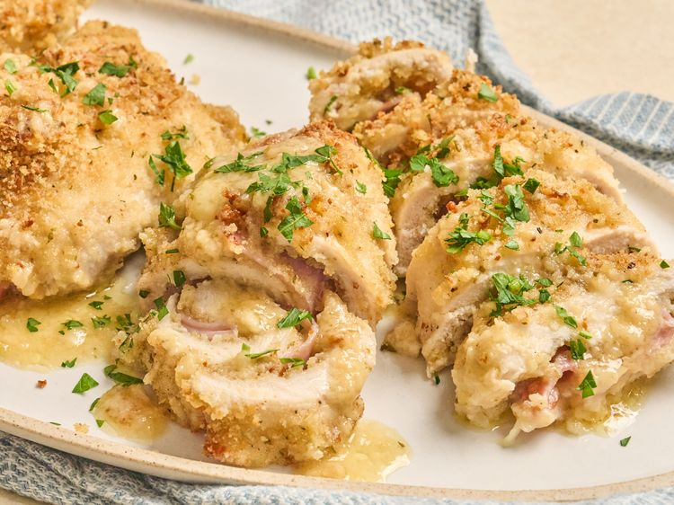

Home
Baked Italian Chicken

Ingredients
- 6 chicken cutlets
- 1 teaspoon kosher salt, plus more to taste
- 3/4 teaspoon ground black pepper, plus more to taste
- 1/3 cup extra-virgin olive oil
- 1 cup Italian seasoned breadcrumbs (or combination of breadcrumbs and panko)
- 1/2 cup grated Parmesan cheese
- 6 slices provolone cheese
- 6 slices ham or prosciutto
- 3 tablespoons softened butter
- 1 cup chicken broth
- 1/2 cup white wine
Directions
- Preheat the oven to 375 degrees F (190 degrees C). Lightly grease a 9x13-inch casserole dish. Pound chicken between 2 pieces of plastic to an even thickness of 1/4 inch. Season cutlets on one side evenly with salt and pepper.
- Pour oil into a shallow dish. Stir breadcrumbs and Parmesan cheese together in a separate shallow dish.
- Dip each cutlet in olive oil to coat both sides and allow any excess to drip off. Coat cutlet in breadcrumb mixture, pressing lightly to adhere crumbs if necessary.
- Place one slice of provolone cheese on each cutlet and top with a slice of ham. Roll cutlets tightly and secure with a toothpick. Place cutlets in the prepared pan. Sprinkle each cutlet with 2 to 3 teaspoons of leftover breadcrumb mixture and top with a half tablespoon butter over the toothpick. Pour broth and wine around the cutlets.
- Bake in the preheated oven until crisp and golden brown and saucy is bubbling around the edges, 35 to 40 minutes. Remove toothpicks and serve chicken with pan sauce.